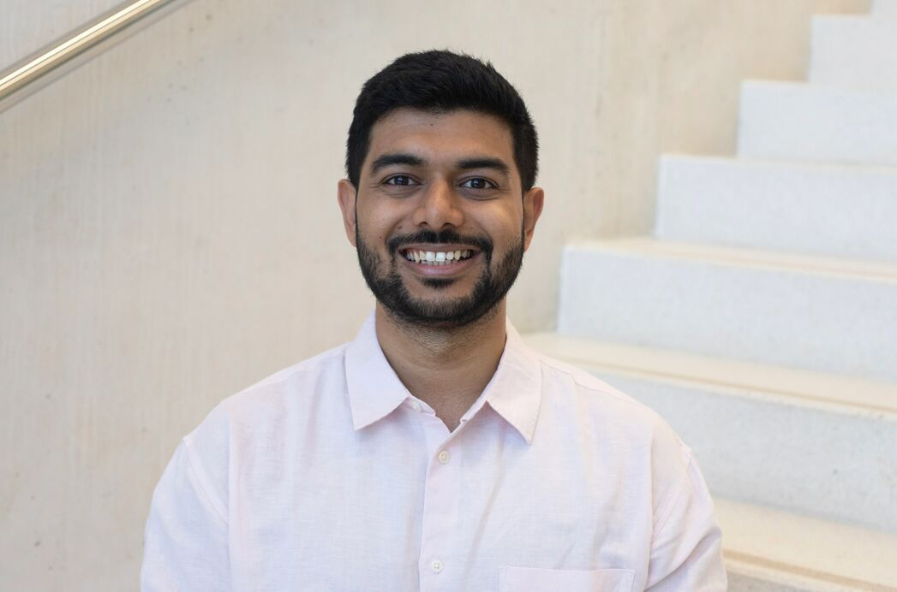

Quantum information · Metrology · Simulation
Anubhav Kumar Srivastava, PhD
Quantum Control Scientist — Quantum Sensing at Ideaded, Spain
I recently completed my PhD in quantum physics at ICFO — The Institute of Photonic Sciences in Barcelona, as a Marie Skłodowska-Curie ENLIGHTEN fellow in the group of Prof. Maciej Lewenstein, co-supervised by Dr. Marcin Płodzień. My thesis, Quantum Simulations of Spin Systems for Optimal Quantum Metrology, explores how many-body spin systems can be simulated and engineered to reach the ultimate limits of precision measurement.
My work sits at the intersection of quantum simulation, quantum metrology, and machine learning — building high-performance simulation tools, optimization pipelines, and neural-network models for quantum systems, with a strong grounding in tensor networks, semidefinite programming, and variational circuit optimization.
I now work on quantum control and quantum sensing at Ideaded in Spain. Beyond research, I care deeply about scientific outreach — from co-founding the quantum awareness hub QTPi to writing for children in Frontiers for Young Minds.

ICFO, Castelldefels · 2026
May 2026 · ICFO, Barcelona
The defense
Defending Quantum Simulations of Spin Systems for Optimal Quantum Metrology.
Now
Quantum Control Scientist, Ideaded — quantum sensing R&D.
Education
PhD, Quantum Physics — ICFO, Spain (2026). BS-MS Physics — IISER Mohali, India (2021).
Beyond physics
Classical Indian music on guitar, quizzing, stand-up comedy, football.